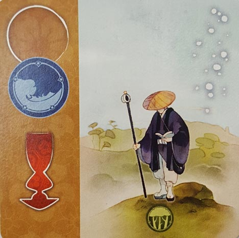

In this Kanagawa review, the Board Crazy guys break down the pattern-building board game that’s designed by Bruno Cathala & Charles Chevallier and published by IELLO. We’ve finally been admitted to Master Hokusai’s school of art in Japan, and now we must compete to paint the best print. And if we want to earn the most diplomas, we have to be smart! For more, continue on below for our thoughts on Kanagawa.
D reviews Kanagawa
 (Author’s
note: this review is meant to accompany our gameplay video and will not
go in-depth on the game’s rules. If you’re interested in learning how
the game is played, please watch the video. It’s not bad.)
(Author’s
note: this review is meant to accompany our gameplay video and will not
go in-depth on the game’s rules. If you’re interested in learning how
the game is played, please watch the video. It’s not bad.)
I’ll be honest, I was a little unsure if I would enjoy Kanagawa when I was reading through its rulebook for the first time. Its theme – assembling the most harmonious print in order to impress your master – is unique, but not one that I would describe as being particularly interesting to me. And the rules themselves were a bit of a challenge. This is the sort of game where the rules don’t entirely make sense until you have the complete picture. For some people that may be fine or even exciting, but for yours truly, it’s a source of frustration and anxiety. Once I had finished the rulebook, I understood how to play, but I still had no idea if the game would be any fun.
But by now, I should know better than to doubt Bruno Cathala too much; the man knows how to make a good board game. This is the second game of his we’ve played that is set in historic Japan. The first, Yamatai, was one of my favorite games of last year. Kanagawa doesn’t really share anything in common with Yamatai in terms of gameplay, but it does feature similarly clever design choices and visually pleasing aesthetics, the latter of which draws more authentically from its Japanese inspiration than Days of Wonder’s bigger budget title.
The art and production quality were both pleasant surprises. The roll-out, bamboo playing mat is a really cool choice, being sturdy and unique while fittingly enhancing the players’ immersion. The pawns and diplomas are all finely made as well, but the cards are the star of the show. While it may take you a minute to figure out why the symbols on the left side are upside down, the artwork contained on them – courtesy of Jade Mosch – is fantastic and immediately captivating. The characters, animals, and buildings all further evoke the 19th century Japanese setting of the game, in addition to just being a delight to look at.
The gameplay has a simple structure, but requires quite a bit of consideration from the players. There are a lot of elements to keep track of in Kanagawa and not just in regards to your own studio. Being cognizant of the goals of your opponents is a key piece of the puzzle, and sabotage is a legitimate strategy. While drawing lesson cards and adding them to your print or studio is fun and obviously the main part of the game, the diplomas get my vote for the finest bit of design. Not only do they tie everything together by giving the players a variety of goals to achieve throughout the game, but they also add a press-your-luck element – where a player must immediately choose to take a diploma or forfeit it for good – that leads to some tough decisions that may be the difference between winning and losing.
If I have a complaint about Kanagawa, it’s that there is a teensy bit more randomness than I would like. There are times when it feels like the card(s) you need are just not appearing for you, and while a healthy amount of patience can save you in the end, there is no doubt that being lucky can sometimes outweigh being good. Playing with the full four players is also recommended, as you’ll be seeing more cards every round and maximizing everyone’s chances of getting something useful. Aside from that small grievance, I really enjoy Kanagawa, more than I initially thought I would. It’s beautiful, quick in both pace and playtime, and never boring. Definitely check it out.
D’s Rating: Four Stars out of Five
Will reviews Kanagawa
 Kanagawa might be the most elegant board game I’ve ever played, and I don’t just mean from a visual standpoint. No, Kanagawa
is elegant in every sense of the word, from the artwork to the gameplay
and everything in between. While playing this game, there’s an aura of
calm and casual entertainment that I’ve only ever noticed in a few other
board games. While the laid-back atmosphere might be too relaxed for
some, it will be a pleasant change of pace for most others. Master
Hokusai’s school of art is an incredible place to be.
Kanagawa might be the most elegant board game I’ve ever played, and I don’t just mean from a visual standpoint. No, Kanagawa
is elegant in every sense of the word, from the artwork to the gameplay
and everything in between. While playing this game, there’s an aura of
calm and casual entertainment that I’ve only ever noticed in a few other
board games. While the laid-back atmosphere might be too relaxed for
some, it will be a pleasant change of pace for most others. Master
Hokusai’s school of art is an incredible place to be.
Artistically, this game is almost as good as it gets, especially if you appreciate Japanese-style artwork. In fact, the entire premise of Kanagawa is that you’re a painter in 19th century Japan, so the visual style of this game is almost as important as its gameplay. Thankfully, Jade Mosch (the game’s artist) delivered in a big way here. With a variety of art to ogle, from animals to buildings and much more, Kanagawa is a feast for the eyes. The cards are simply beautiful, but they aren’t alone in that regard. The paintbrush and studio master pieces are also attractive, if not a little plain, and the bamboo, roll-out game mat is just awesome. Everything stuffed inside this game’s box is so gorgeous – it’s a real achievement.
Luckily for us, Kanagawa is more than merely a visual masterpiece; the gameplay is similarly satisfying. For starters, there’s not much to learn before you can start playing, and once you do, you’ll pick up on the rules fairly quickly. Intuitiveness is something I’ve come to expect from Bruno Cathala’s games, and he (and Charles Chevallier) didn’t disappoint here. Basically, you draft cards from the bamboo mat and either add them to your print or to your studio. The way the cards portray the art and upgrades, allowing them to be flipped and placed in different ways, is truly ingenious, even if other games have done something similar. Moving your brush around, painting your print, and upgrading your studio all feel so smooth and easy. Again, there’s a lot of elegance here.
That’s not to say that Kanagawa is devoid of tension and strategy, because it isn’t. When you go to pick your cards, you can choose from the one’s placed or wait for more to be put out. But if you wait, the column of cards you had your eye on might be taken by one of your opponents. In other words, there are some push-your-luck elements here, and they really add a lot to gameplay. Also, you need to be aware of how well your opponents are doing because of the “diplomas”. These diplomas allow you to earn extra “Harmony” (victory points) whenever you complete specific objectives, such as painting a certain number of trees or gaining a number of paintbrushes. There are many diplomas, so everyone will have a fair chance of collecting some. However, there’s also a good chance that one of your opponents will be going for the same diploma as you are, which is why you need to pay attention to what they’re doing. If you don’t, you might be stranded without the points you need to win.
Truthfully, I’m really struggling to pick out flaws in regards to Kanagawa. If I had to nitpick, I’d say that there’s not enough strategy throughout the gameplay, especially early on. For the first handful of rounds, you have to figure out which cards you’re really shooting for, but this takes a while because other players might take the ones you want, forcing you to pivot. In addition to that nitpick, I’d also say that Kanagawa doesn’t encourage that much player interaction. But then again, this game is about the peaceful elegance of painting, so maybe that’s how it should be.
I keep coming back to the word “elegance”, but that’s because it truly is the best term to describe Kanagawa. While most games are designed to build tension and intrigue, this one encourages thoughtfulness and tranquility. I realize that might not be what some gamers want from their tabletop experiences, but even so, I still recommend this game to everyone. Even if you don’t enjoy some parts of the gameplay, I guarantee you’ll enjoy the stunning, well-made components. Kanagawa might be one of my favorite games, and I’m definitely upset that I didn’t get to play it sooner.
I give Kanagawa an: A
Kanagawa Review – Board Crazy’s Ratings
Leave a Reply
You must be logged in to post a comment.